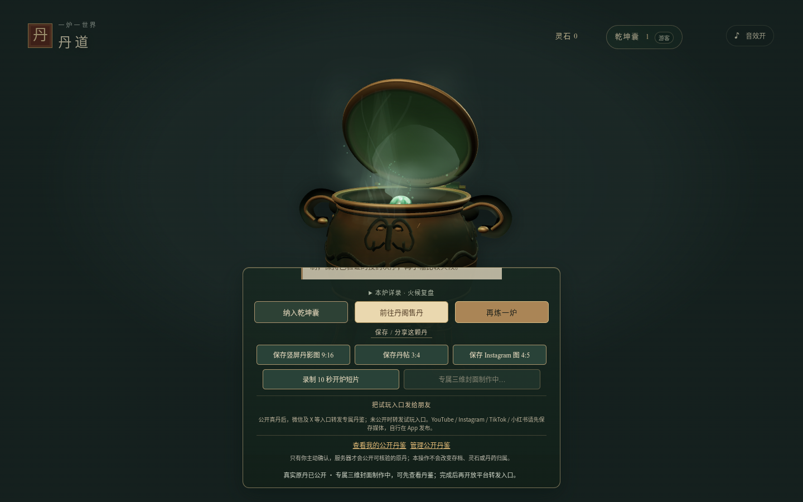
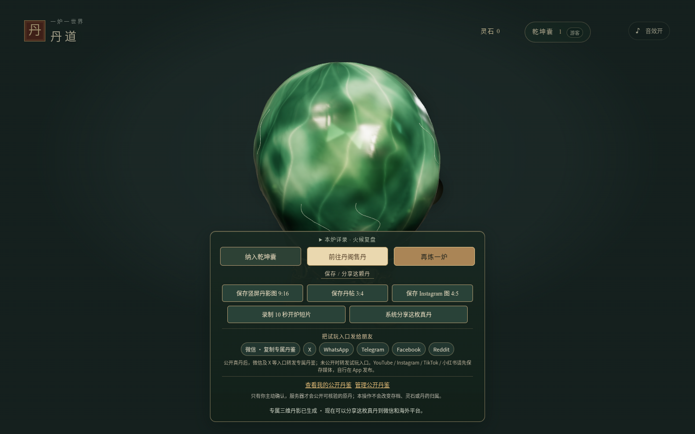
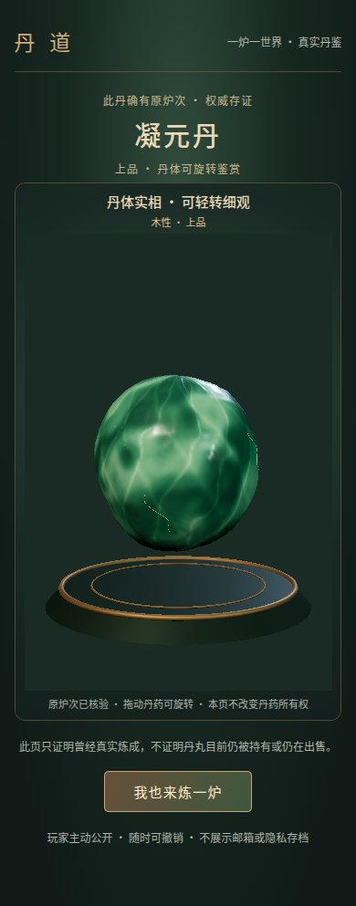

01 · 封面仍在制作
真丹已炼成，丹鉴页面可以打开；社交渠道与系统转发暂停。玩家仍可保存本地图片、录像与管理作品，而不是把普通品牌图误发成专属三维预览。
全新测试玩家真正投药生火，自然等候七炉刻，开炉得到上品凝元丹；本人两次确认公开后，系统立即允许查看三维丹鉴，但不会把还没生成真实封面的链接提前分享给微信、X 或 Meta。后台从这枚原丹的真实外观种子生成专属三维 PNG，再开放分享入口。

真丹已炼成，丹鉴页面可以打开；社交渠道与系统转发暂停。玩家仍可保存本地图片、录像与管理作品，而不是把普通品牌图误发成专属三维预览。

真实 Three.js 后台生成了 426,145 字节专属PNG。客户端收到服务器数据库确证后，平台转发入口自动解锁，社交地址携带 media=verified 版本标记，和可能被缓存的早期品牌页分离。

左侧是没有测试作者登录状态的390像素Chrome匿名访客。它看到的就是同一枚由真实炉次签发的三维凝元丹，可观察丹体外观，而不是另外画的一张“营销图”。
原作者随后在乾坤囊的丹鉴管理页实际二次确认撤销；公开页面、JSON和图片返回404。整个分享和撤销过程没有改动原玩家丹药、灵石或炼炉记录。